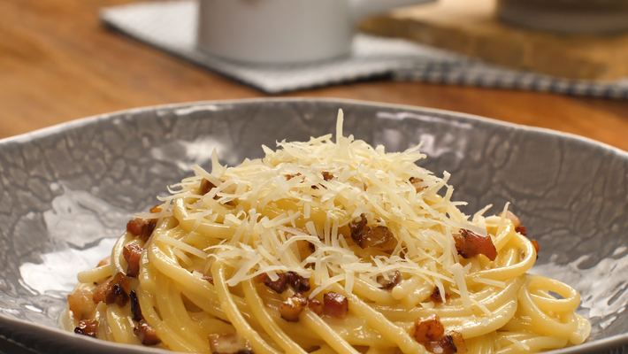

MACARRÃO À CARBONARA
Gabriel acha uma péssima idéia

Igredientes
- bacon picado a gosto
- queijo ralado a gosto
- 3 ovos
- sal
- pimenta-do-reino a gosto
- macarrão de sua escolha(espaguete,fusili,etc.)
- creme de leie se quise da um toque diferente à receita
Modo de preparo
- frite bem o bacon, até ficar crocante (pode-se adicionar salame picado).
- coloque o macarrão para cozinha em água e sal.
- no refratário onde será servido o macarrão, bata bem os ovos com um garfo.
- tempere com sal e pimenta a gosto, e junte o queijo ralado, também gosto.
- quando o macarrão estiver pronto, escorra e coloque (bem quente) sobre a mistura de ovos, misture bem.
- coloque o bacon, ainda quente, sobre o macarrão e sirva.